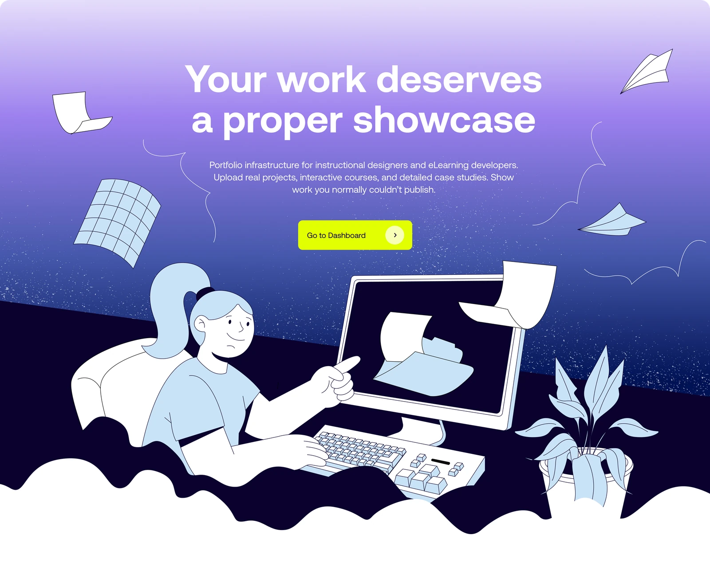
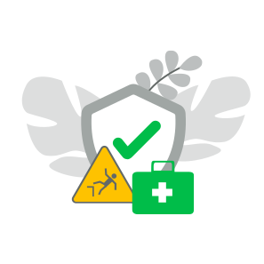
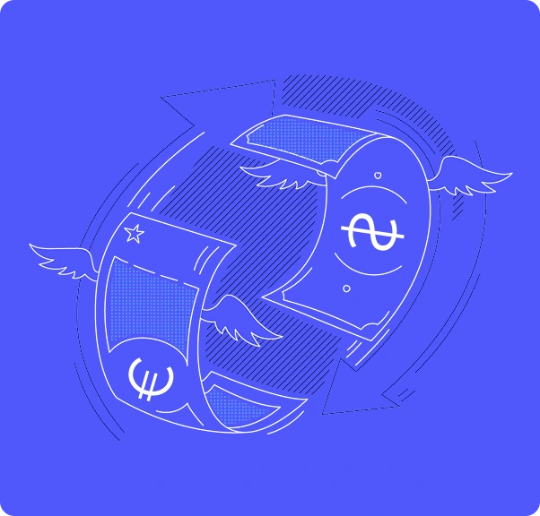
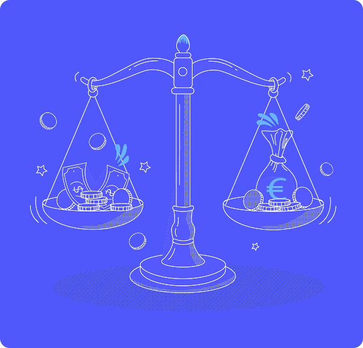
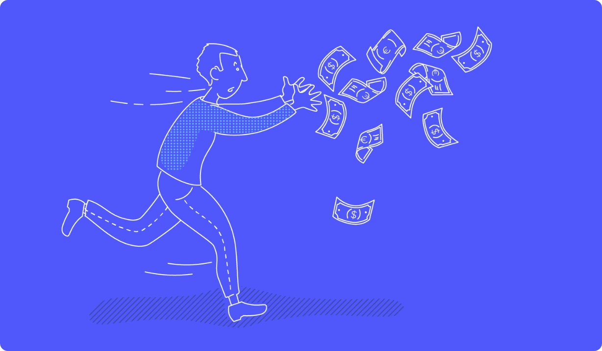

Illustration & Motion
Illustrations and animation for e‑learning courses and explainer videos, for four clients.
- Illustration
- Animation
- Storyboards
- E‑learning
Instructional work
Illustrations for the landing page of Instructional work, a portfolio platform for eLearning developers and instructional designers. The brief: warm and friendly, with a touch of tech and learning.


SEB bank
Safety training is often something people click through. For SEB bank's occupational safety course, illustrations and animation turn everyday workplace situations into short, recognisable stories, from a well‑set desk to a first aid kit.

BFAA
Illustrations for a personal finance eLearning course by the Baltic Financial Advisors Association (BFAA). The goal: to turn abstract money concepts into clear visual stories.



Crystal Intelligence
Storyboards, illustrations and animation for an explainer video by Crystal Intelligence, a blockchain intelligence platform. The goal: to explain how blockchain works in simple, visual steps.